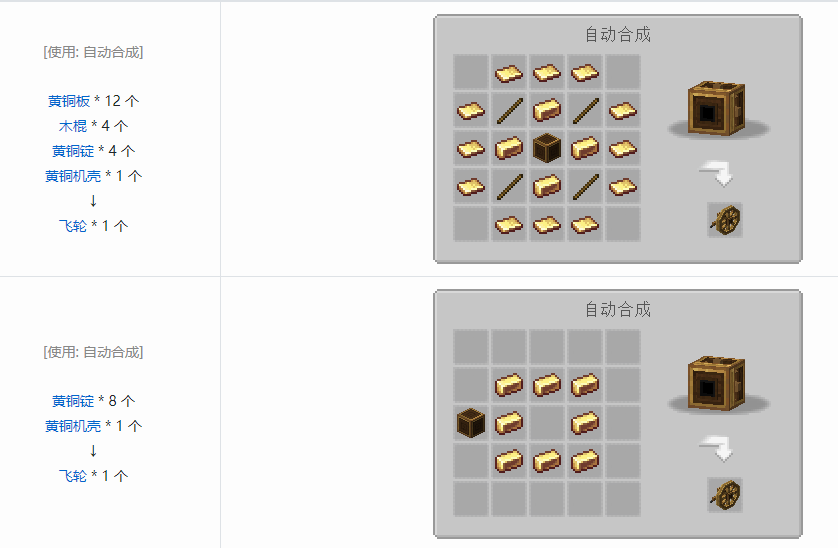

和其它的科技模组相比，Create对于原版世界面貌带来的寥寥无几的直接改变都隐藏在地表之下，也就是岩石和矿物两方面。
目前所有新增的岩石及其变种样式都属于装饰性方块，且都拥有仅需要原版材料即可制造的配方。
在矿物方面Create只添加了两种全新的矿物：铜矿和锌矿。
根据相关条目介绍：
安山合金在Create工业体系中的地位相当之高，基本上Create的所有器件都需要它。
而它的合成则是需要2个铁粒（锌粒）和2个安山岩，所以在原版中只有装饰作用的安山岩在Create中也有了很大的用处。
(Ps:一个闪长岩加一个圆石也可以合成两个安山岩)
海带烧制后的产物干海带是大多数物流元件的基础材料(这海带是真硬)
通常玩家获取海带的方式就是下海去采摘，当然也能和流浪商人进行交易来获取海带
珊瑚可以用来合成能够一键催熟树木的树木肥料，对于珊瑚玩家也确实只能去跑图寻找暖水海洋了，因为流浪商人只会出售无法加工成珊瑚的珊瑚块。
在正式开始利用这些动力之前我们需要先讲清楚一些最基本的机械概念。
Create的动力系统与传统的发电---存电---耗电不同，Create中并没有可以存储动力的物品。
Create的旋转动力系统在此基础上做出了两个个变化
1.在“发电”与“耗电”基础上为这两个环节增加了一个变量——RPM（每分钟转数/Revolutions Per Minute）
2.彻底去掉了“存电”这一环节，动力实时产生得实时消耗掉。
这种特性的加入使得Create的动力系统变得复杂了起来。
大致意思就是:
1.转速(RPM)越高，机器所消耗的系统内的应力就越高。
2.转速(RPM)越低，机器所消耗的系统内的应力就越低。
3.一旦系统内机器消耗的应力大于系统内所生产的应力，整个系统就会瘫痪，直到系统内产生的应力大于或者等于机器所消耗的总应力。
玩家在建造机械的时候必须要意识到机械网络中的各个元件都是息息相关的整体，一个机械和动力源的链接与它们之间顺序的改变都是有可能“牵一发而动全身的”
在Create中动力源有以下三类:
1.手动式(手摇曲柄，阀门手轮)
顾名思义，手动式就是玩家可以通过右键该部件来获取动力。
2.被动式(水车，风车)
如果水轮存在不同方向的水流，那它的转动速度将会被一定程度上地被抵消。
一个正向，一个反向的水流将会产生96su (128su-32su) 的应力，同理，两个正向，一个反向的水流将会产生160su (192su-32su) 的应力。
当存在一个正向，两个反向水流的时候，水轮将会停止转动。
通过搭配灵魂沙，在四个方向提供正向的水流，最高可以达到20rpm的转速，以及320su的应力。
3.主动式(熔炉引擎)
熔炉引擎是较为高级的动力源，它拥有更大的应力产生能力。搭建这个完整的动力结构需要用到三个部件：熔炉、熔炉引擎本身以及飞轮。
最初可以合成使用的机械，或用更准确的说法——作业元件就两种：石磨和辊压机
粘土块——粘土：3个的基础上还有50%的几率额外产出1个
骨头——————骨粉：25%的几率额外产出3份
各种染料的原料——————染料
煤炭——————黑色染料
安山岩——————圆石
圆石——沙砾——————燧石
羊毛——————线
矿石——————碎矿
沙子/闪长岩——————石灰沙
砂岩——————沙子
草/高草丛——————小麦种子：25%几率产出一份小麦种子，相当于4份草换一个种子
蕨/大型蕨——————绿色染料，小麦种子
陶瓦/花岗岩——————红沙
鞍——————皮革
合成配方取自MC百科